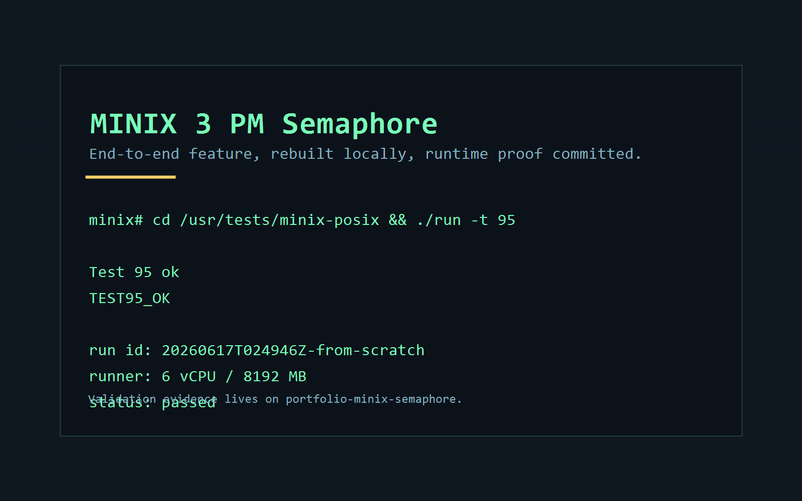

PM-Backed Counting Semaphores PoC for MINIX 3
Repository-structured presentation of a MINIX-specific semaphore PoC and its committed local validation evidence.
Abstract
This project revisits an older MINIX semaphore experiment and turns it into an end-to-end Process Manager feature with a public header, libc wrappers, server-side state, delayed-reply blocking, interruption handling, and regression coverage. The repository is intentionally split so the implementation can be reviewed independently from the validation evidence.
The default branch no longer mirrors the full upstream MINIX source tree because that structure
obscures the actual contribution. Instead, the upstream-based comparison point is frozen on
minix-source-base, the implementation is isolated on minix-semaphore,
and the local rerun evidence is preserved on portfolio-minix-semaphore.
Repository Structure
- minix-source-base
- Frozen upstream-based base branch preserved only to keep the feature diff narrow and technically reviewable.
- minix-semaphore
- Clean implementation branch used to inspect the code, packaging updates, and regression tests without portfolio-only material.
- portfolio-minix-semaphore
- Validation branch used to inspect the local rerun evidence and the VirtualBox-based runner used to produce it.
Implemented Scope
- Add Process Manager call numbers and the semaphore message ABI.
- Expose a MINIX-specific public API through
minix/semaphore.hand libc wrappers. - Implement counting semaphore state, FIFO wake-up, delayed replies, and signal interruption handling inside PM.
- Package the public header and add
test95to exercise lifecycle, wake-up order, destroy behavior, and interruption handling.
Implementation Surface
Interface and ABI
minix/include/minix/callnr.hminix/include/minix/ipc.hminix/include/minix/semaphore.hminix/lib/libc/sys/minix_sem.c
Process Manager
minix/servers/pm/sem.cminix/servers/pm/signal.cminix/servers/pm/table.cminix/servers/pm/forkexit.cminix/servers/pm/mproc.h
Packaging and tests
minix/include/minix/Makefiledistrib/sets/lists/minix-comp/midistrib/sets/lists/minix-tests/miminix/tests/test95.c
Validation Evidence
The primary runtime proof is a local rebuild and guest execution path recorded in the committed validation branch. The result set is intentionally small: structured metadata, a focused guest log, and the local runner used to reproduce the path.

- Run ID
20260617T024946Z-from-scratch- Runner size
6 vCPU / 8192 MB- Build path
- Linux-side MINIX build, image rebuild, guest boot, and focused test execution.
- Outcome
status: passed
minix# cd /usr/tests/minix-posix && ./run -t 95 Test 95 ok TEST95_OK